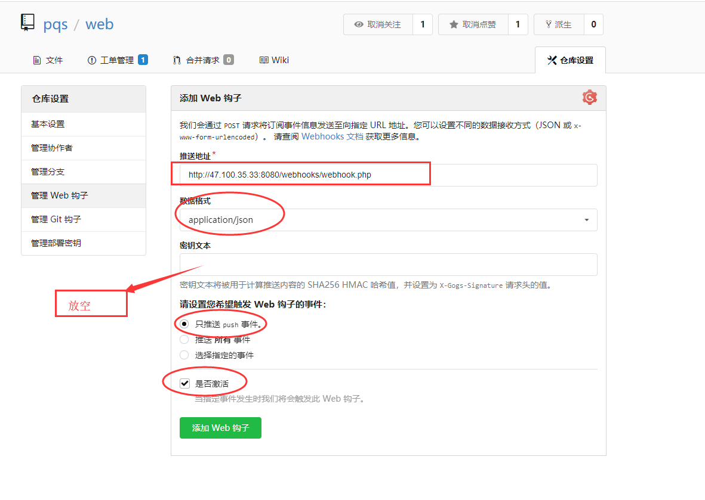
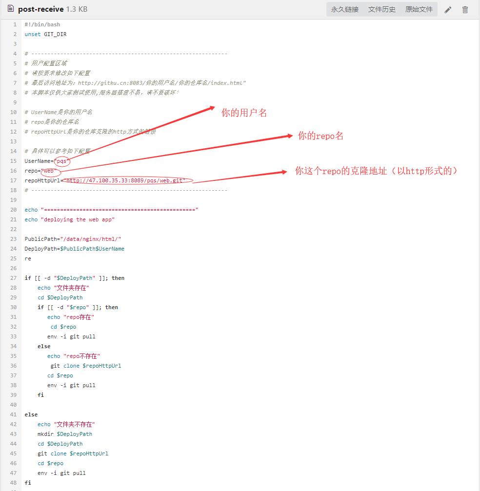
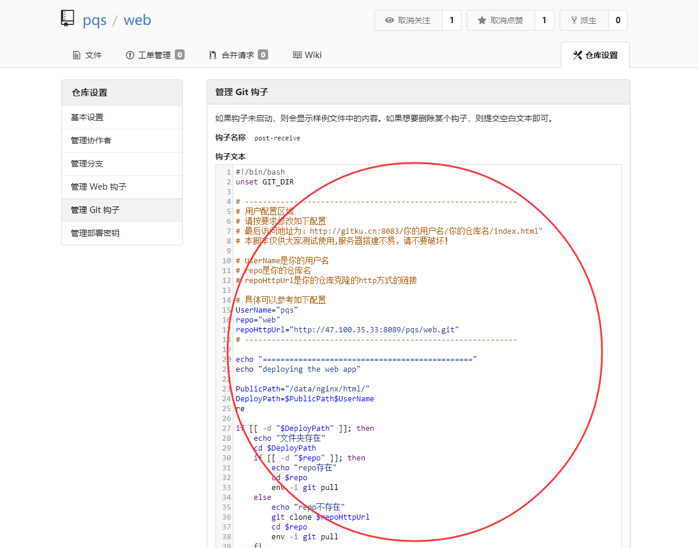
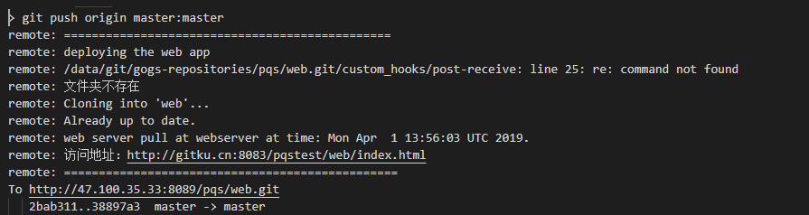

GitKu地址
一个轻量级 web 应用自动部署的介绍文档
部署方法有两种
第一种：添加web钩子进行部署（比较简单，推荐用这种）
1.创建一个 repo
2.然后放上你的代码
3.仓库设置 => 管理 web 钩子 => 添加web钩子（gogs） => 填写推送地址、数据格式、密钥文本（放空）
4.推送你的代码, 当你推送完成的时候就会出发 web 钩子去部署你的 web 应用!
5.访问地址为：http://gitku.cn:8083/你的用户名/你的仓库名/index.html"
图文详情
找到你的仓库的 web 钩子设置
按照以下要求填写

点击添加 web 钩子按钮，完成添加
最后修改你的代码，然后当你 git push 到仓库时就会自动触发 web 钩子帮你部署这个 web 应用
访问地址为：http://gitku.cn:8083/你的用户名/你的仓库名/index.html"
第二种：添加git钩子进行部署（比较复杂）
1.创建一个 repo
2.然后放上你的代码
3.向管理员申请 git 钩子,在本的项目中工单管理(issue) 中留下用户名就行
4.打开本项目中的 post-receive, 复制所有内容
4.仓库设置 => 管理 Git 钩子 => 编写 post-receive
5.把复制好的内容粘贴到里面, 并且修改用户名，repo，和克隆地址
6.推送你的代码, 当你推送完成的时候就会出发 post-receive 钩子去部署你的 web 应用
7.访问地址为：http://gitku.cn:8083/你的用户名/你的仓库名/index.html"
有图有真相
首先打开本项目中的 post-receive 并且复制所有内容
要修改的地方如下

找到你的仓库的钩子设置
粘贴内容并且按照要求（图 2）修改并且更新设置

最后修改你的代码，然后当你 git push 到仓库时就会自动触发钩子帮你部署这个 web 应用
第一次推送部署成功的 git 的 log 输出应该如下

更新推送部署成功的 git 的 log 输出应该如下
补充说明
开源本是不易，请君珍惜！
有任何问题请发邮件给管理员 2945802136@qq.com